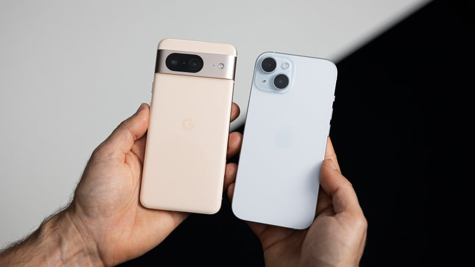

Google Pixel 8 vs Apple iPhone 15: Small but Fiesty
Google Pixel 8 or iPhone 15: Your Next Smartphone?
Although an endangered species, compact phones are going nowhere. This was reinforced by the latest top flagships of Apple and Google: the iPhone 15 and the Pixel 8. Apple officially launched the iPhone 15 series more than half a year ago, while the Pixel 8 followed closely.
Even in mid-2024, it's challenging to find compact devices that deliver better value. Both devices deliver the exemplar flagship experience.
We tested the Pixel 8 and iPhone 15 by draining their batteries, measuring their screens, testing how well they work, taking pictures with each camera, and living with them for a few weeks.So, how do these two compare? Should you consider getting either one of these, or wait a couple of months and get yourself the iPhone 16 or Pixel 9? Let's compare!
iPhone vs Pixel: What's Different?
| Specifications | Pixel 8 | iPhone 15 |
|---|---|---|
| Processor | Google Tensor G3 with focus on AI and ML | Apple A16 chipset with better performance |
| Operating System | Android 14 | iOS 17 |
| Display | 6.20-inch with a 60Hz OLED screen with 120Hz | 6.1-inch with a 60Hz OLED screen |
| Software Updates | 7 years OS upgrades and security patches | 5-6 years OS upgrades |
| Battery | Larger 4,575mAh Battery | Smaller 3,349mAh Battery |
| Price | $699 starting price | $799 starting price |
Design and Size
When it comes to design, the Pixel 8 and the iPhone 15 are similar and different at the same time. The Pixel follows the same design philosophy started by the Pixel 6 series, with a camera bar on the back and a hole-punch front camera, while the iPhone 15 unsurprisingly takes design cues from all the previous generations, starting with the iPhone 12 series.
What makes these two similar is their compact size. The screens of the Pixel 8 and iPhone 15 are very similar in size, transferring this similarity to the overall size of both devices. The Pixel 8 comes at 5.93 x 2.79 x 0.35 inches (150.5 x 70.8 x 8.9 mm), while the iPhone 15 retains its predecessor's dimensions, measuring 5.78 x 2.81 x 0.31 inches (146.7 x 71.5 x 7.80 mm). Subjectively, these two phones look mid-sized, and even though they're far from the iPhone mini, for example, you'll have easier access to all sides of the screen with one hand, compared to bigger phones.
As you can see, these two are really close in size, with the iPhone 15 ending up being a tad more compact in the end. As far as materials go, both use aluminum and glass. The titanium material is reserved for the Pro models of the iPhone 15 series. There's nothing wrong with aluminum, though, it's a great smartphone building material. In our experience, a good grade of aircraft aluminum can rival stainless-steel and even titanium.
When it comes to user experience, these two feel slightly different in the hand, especially if you used them without a case. During our time with both phones, we found that the Pixel 8 is more comfortable in the hand due to its curved design. The iPhone 15 is not far off, though, and if you're going to use these phones with a case, then any difference is going to be mitigated.
Display Differences
As we already mentioned above, the Pixel 8 and iPhone 15 feature very similar display panels in terms of size (6.2 inches on the Pixel 8 vs 6.1 inches on the iPhone 15). There's one major difference, though, and it lies in the refresh rate.
The Pixel 8 adopts a variable 60-120Hz refresh rate, while Apple sticks with 60Hz for the iPhone 15. Which is really a shame, especially when other flagships and even midrange phones have already moved to higher refresh rates on their displays. Furthermore, everything looks way smoother at 120Hz, and we tested this times and again, there is a perceivable difference!
When you're scrolling through text it moves way smoother at 120Hz, and if you play mobile games, the frame rate difference could be crucial and decide your win. We've tried both the iPhone 15 and the Pixel 8, and the latter feels way smoother in the aforementioned tasks.
The resolution of the Pixel 8 is FHD+ (1080 x 2400 pixels, 428 PPI), and according to Google it can output 1,400 nits in HDR mode and up to 2,000 nits peak brightness. The iPhone 15 features an OLED display with 2556 x 1179 pixels resolution, which translates to 461 PPI pixel density.
Apple also cites up to 2,000 nits of peak brightness, so both phones are again very similar in that regard. In real-world scenarios, as shown by our display tests, the Pixel 8 gets brighter, and it's also a tad more color accurate.
Camera Differences
In the camera department, there are more similarities than differences. The iPhone 15 sports a new main camera sensor, a 48MP one with a 1/1.5" size, which is a 27% increase for the iPhone 15 over the 14 series. The main camera of the Pixel 8, on the other hand, features a 50MP 1/1.31" sensor, under a lens with f/1.68 aperture. In reality, both phones should produce similar results, with the main differences coming from the post-processing algorithms.
The samples from the main camera are pretty close in quality with good level of detail and decent dynamic range. One thing that sticks out is that the Pixel 8 produces colder photos, which are also a tad darker than the shots done with the iPhone 15. But overall, great results from both phones.
The video quality looks great on both phones, but the Pixel 8 seems to produce brighter frames. The image stabilization is a tad better on the iPhone, as is the zoomed video sample. In night mode or low-light conditions both phones perform admirably, with the Pixel 8 even resolving more detail at times, and boasting better dynamic range.
Overall, Google has done a great job with the Pixel 8 series in terms of photo and video quality, and it's largely down to processing algorithms. You can check out the results of our Blind test camera comparison and get surprised by the results!
Performance and Software
There are some radical differences when it comes to hardware and software between iOS and Android devices, and the Pixel 8 and iPhone 15 are stark examples. Let's take RAM, for example. It's not all created equal when we talk about iPhones and other Android phones, mainly because the apps and OS components are much more optimized on iOS and thus require less RAM to run smoothly. The Pixel 8 has 8GB of RAM onboard, while the iPhone 15 manages to do pretty much the same job with only 6GB.
The same goes for the software; iOS is different than Android in many ways, although both serve the same purpose and, in the end, do the same thing. The Pixel 8 ships with Android 14 onboard, and you can check out our preview for a deep dive, while the iPhone 15 runs iOS 17. We have a detailed review of Apple's new OS as well, so be sure to check this one too.
Looking at the synthetic benchmarks below, it's clear to see that the iPhone 15 wins everything hands down, and the new Tensor G3, even though a clear upgrade compared to its predecessor, is not a match to the A16. In real life,4 both phones work smoothly, and you probably won't notice much of a difference. But for the sake of this comparison, the iPhone 15 wins this round.
In real-life scenarios, both phones seem pretty fast, and even though the Pixel 8 can be a little hesitant occasionally, we attribute that to the ecosystem and the less wiggle room from the Tensor G3. If you need sheer power, we recommend the iPhone 15, as it has a lot of it.
Battery Life and Charging
This year we wave goodbye to the Lightning port, for better or worse (mostly for the better, if you ask us). Sadly, despite the new port, charging and transfer speeds remain unchanged on the iPhone 15 Plus. Apple cites 50% battery in 30 minutes with a 20W wired charger so it's the same old, same old.
The Pixel 8, on the other hand, comes with a 4W bump in charging speed, bringing wired fast charging to 27W, which is pretty close to the iPhone 15. Wireless charging is present on both devices, with MagSafe reserved for the iPhone, and 18W wireless charging support on the Pixel 8.
The Pixel 8 outperforms the iPhone 15 by roughly two hours in our browsing and video streaming tests. We'll have to run the gaming test again, as we ran into some issues, but it's safe to say that the Pixel 8 is better and more efficient than the iPhone 15 when it comes to stamina and battery life.
Specifications Comparisons
| Specifications | Pixel 8 | iPhone 15 |
|---|---|---|
| Size / Weight | 150.5 x 70.8 x 8.9mm / 187 gr | 146.7 x 71.5 x 7.80mm / 171 gr |
| Screen | 6.17 inch 60-120Hz |
6.1 inch 60Hz |
| Processor | Google Tensor G3 | Apple A16 Bionic |
| RAM / Storage | 8/128 GB, $699 8/256 GB |
6/128 GB, $799 6/256 GB 6/512 GB |
| Cameras | 50Mp wide 12MP ultrawide |
48MP wide 12MP ultrawide |
| Battery | 4,575 mAh | 3,349 mAh |
| Charging | 27W wired 18W wireless |
25W wired 15W MagSafe |
Pixel 8 vs iPhone 15: Final Thoughts
So there you have it! Our comparison of the Pixel 8 and the iPhone 15! These animals roam different territories of the smartphone jungle, and yet they're starting to meet each other from time to time. Both offer similar performance, features, camera experiences, and compact sizes, and both come with similar battery life and charging speeds.
Which one should you choose, then? Well, it depends on two things, basically. First, the price. The iPhone 15 starts at $799, as per tradition, while the Pixel 8 — while slightly pricier than its predecessor — is still a $100 cheaper than the iPhone.
The second major factor is the ecosystem. If you're using plenty of Apple devices, switching to a Pixel won't make much sense, apart from exploring something different on its own. If you're coming from a heavy Android background, you have more wiggle room, so to speak.
You can opt for the Pixel and get that definitive Android experience with fast feature drops and the latest updates, and you can also use the iPhone 15 as a gateway to Apple's ecosystem.